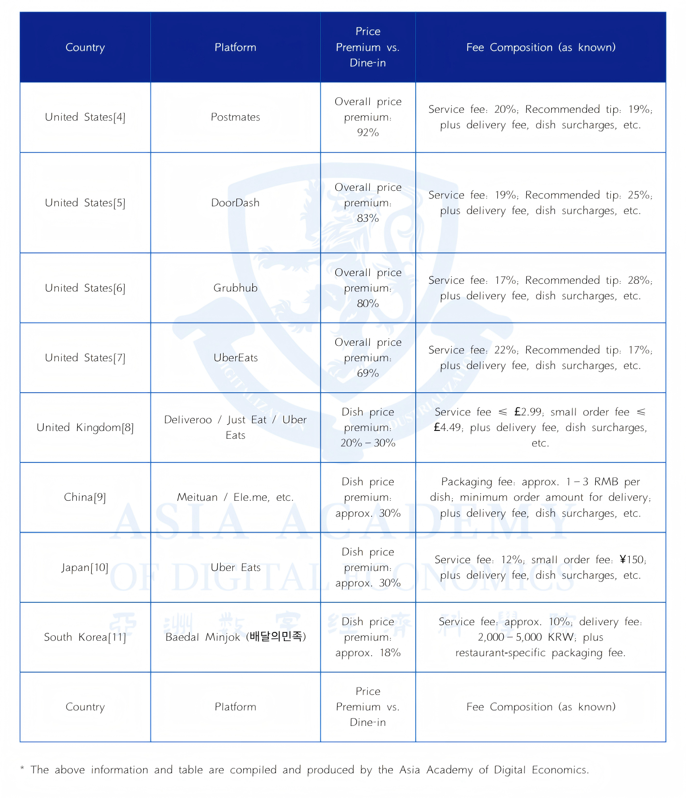
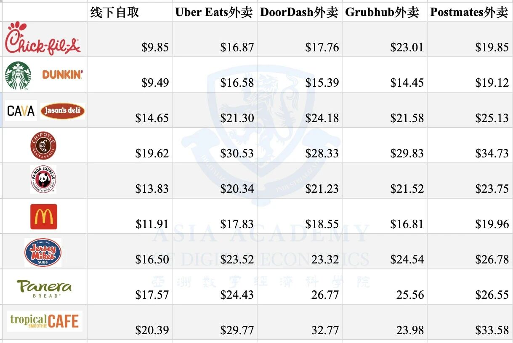
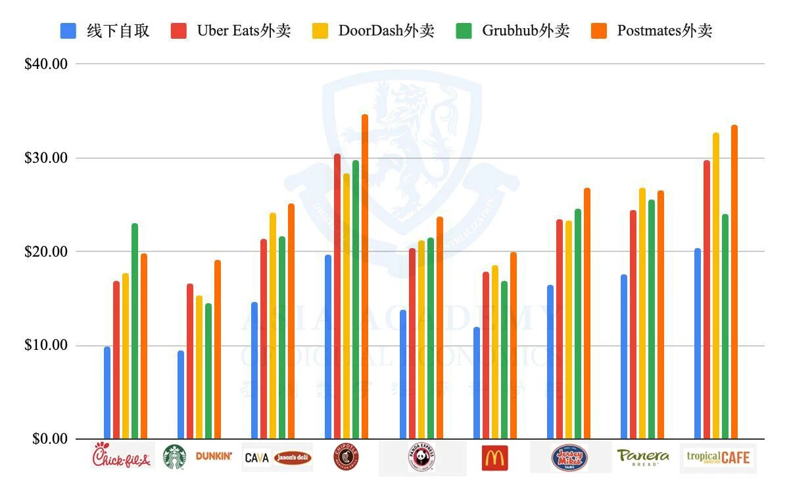
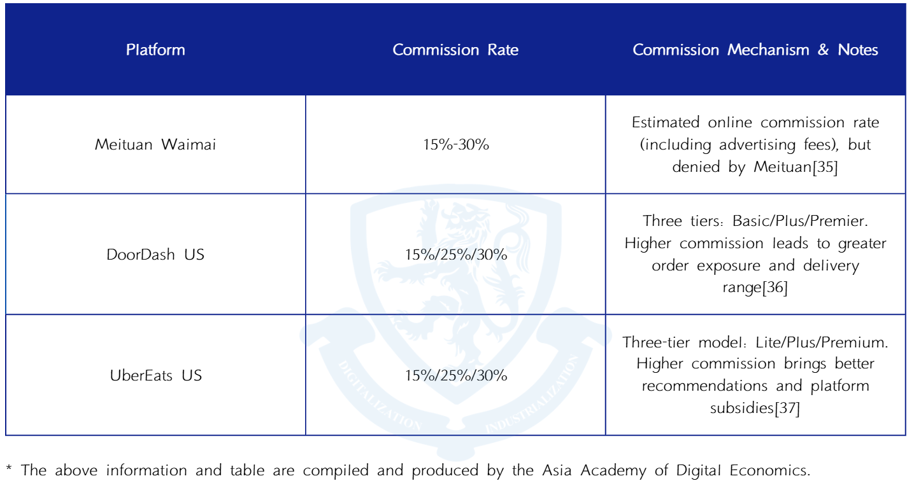
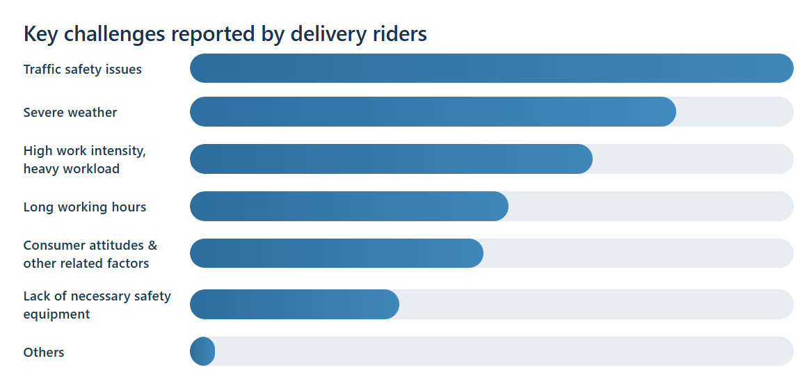
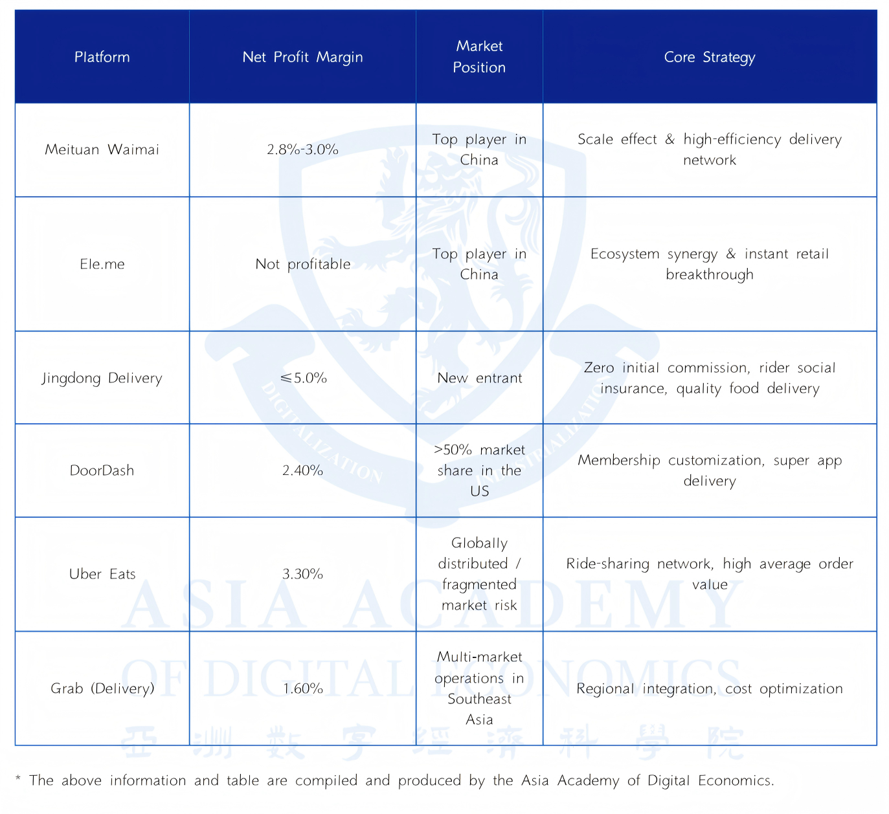
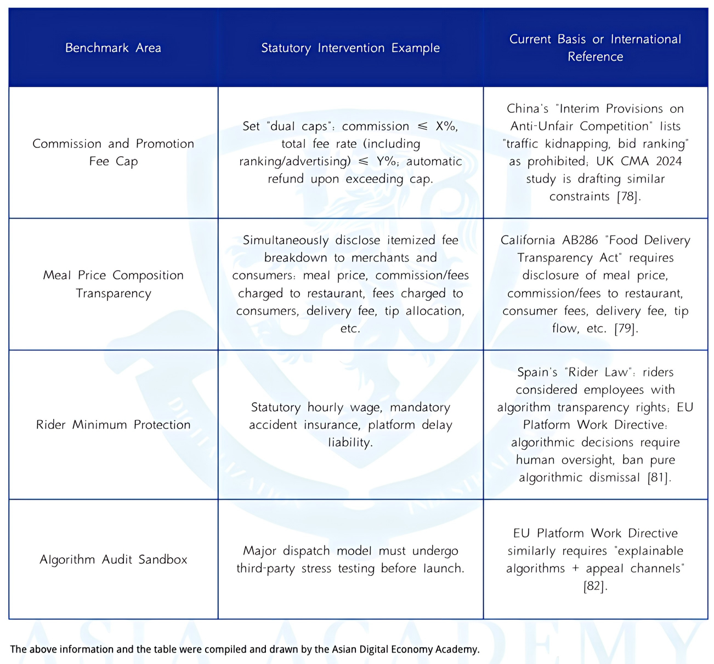

The Truth Behind the Global Food Delivery Traffic Tax: After Subsidies Fade, Consumers Pay More, Merchants Stay Poor, and Riders Bear the Risks
Key Points
- Across China, the US, Japan, and South Korea, delivery customers often pay 20%–40% more than dine-in prices once service, delivery, packaging, and other fees are added.
- Merchants face commissions of roughly 15%–30%, while search ranking and visibility are increasingly tied to paid promotions, pushing them to raise prices or cut quality.
- Couriers bear intense algorithmic pressure, weak labor protections, and outsized safety risks relative to their income under flexible employment models.
- The article argues that the platform-centered business model creates a structural lose-lose-lose outcome and that regulation must intervene earlier, more precisely, and more deeply.
1. "One Loss": 40% More Expensive Than Dining In? Why the Food Delivery Experience Is Consistently Frustrating for Consumers in China, the US, Japan, and South Korea
For consumers, the price of food delivery increasingly includes far more than the meal itself. Across major markets, final bills are inflated by delivery fees, service fees, packaging charges, tips, and menu markups, while the full breakdown often becomes clear only at checkout. The article argues that this produces a familiar pattern across countries: customers feel they are paying substantially more than they would in-store, yet remain unable to see clearly where the money goes.
What once attracted users was the memory of heavy subsidies and exceptional value. As those subsidies receded, platforms shifted toward layered surcharges and less transparent pricing structures. That shift has created a strong sense of psychological loss: users who were trained to expect convenience at a bargain now encounter higher prices, hidden markups, and deteriorating trust.
From High Subsidies to High Surcharges
In China, consumers commonly find that identical items cost around 30% more on delivery than in-store, and total spending can rise by more than 40% once delivery and packaging fees are included. Complaints are worsened by the opacity of fee structures and by cases of arbitrary packaging charges. Many consumers believe delivery and dine-in prices should match, or that delivery should even be cheaper because it does not occupy dine-in space, yet the opposite has become routine.
Comparable patterns appear abroad. In the United States, the gap between menu price and final payment can be dramatic once service fees, delivery fees, and tips are added. In Japan, average delivery fees and service charges can push delivered meals 20% to 40% above dine-in prices. In South Korea, standard delivery charges and peak-time surcharges similarly add to the burden, while merchant-side commissions are indirectly passed through to customers. Even when fees are itemized, dissatisfaction does not necessarily fade, because seeing each surcharge can itself deter use. The article suggests that platforms have strong incentives to obscure parts of the markup: transparency may improve understanding, but it can also reduce conversion. The result is short-term revenue at the cost of long-term trust.



Low-Quality Food and Beverage Hidden Behind Glossy Packaging
The second source of consumer frustration is declining food quality. In China, complaints about spoiled ingredients, foreign objects, and questionable hygiene have risen sharply. Media investigations described a growing market of highly packaged, aggressively marketed delivery brands that rely on low-cost prepared foods, poorly regulated kitchens, and opaque sourcing. In these accounts, presentation and online promotion create the appearance of quality, while the actual product is mass-produced, nutritionally degraded, and sometimes prepared in unsanitary conditions.
The article argues that this is not simply the result of bad actors. Under high commissions and pay-for-traffic competition, merchants that insist on better ingredients and more standardized preparation often struggle to survive. By contrast, businesses that cut material costs and spend heavily on visibility, promotions, and gaming the platform may be better positioned to endure. In this environment, quality becomes one of the first casualties, while algorithms and marketing become the real determinants of commercial survival.
Although the specific complaints differ by country, the underlying concern is global. In the UK and the US, consumers are less likely to frame the issue as opposition to pre-prepared food itself, but they frequently complain about poor temperature retention, loss of freshness, degraded taste, and hygiene concerns. Surveys in South Korea and Japan show similar unease: consumers worry about health and safety, are dissatisfied with food arriving cold, and report that the delivered product often falls short of both expectation and in-store quality. Across markets, the common denominator is simple: what arrives often feels worse than what was promised.
2. "Two Losses": Commissions of 15%–30% Plus Paid Ranking "Traffic Taxes" — Food Delivery Merchants Worldwide Are Voicing Their Grievances
The article presents merchants as the second losing party in the delivery ecosystem. Their burden is not limited to headline commissions: platform economics increasingly tie exposure, ranking, and traffic to a merchant’s willingness to spend more. This transforms visibility into a purchasable resource and raises the cost of customer acquisition, especially for smaller businesses that lack the budgets of larger chains.
Commission Levels of Major Domestic and International Food Delivery Platforms (15%–30%)
Across both Chinese and international markets, standard commission levels generally fall in the 15% to 30% range. In the United States, major platforms such as DoorDash and Uber Eats have offered tiered commission plans in which higher commissions come bundled with greater marketing support and more favorable in-app placement. Restaurants that opt into the more expensive tiers receive broader delivery areas, stronger visibility, and other platform advantages.

Chinese merchants report a similar reality. Although platforms may publicly distinguish between technical service fees and delivery fees, many small and medium-sized businesses say the true combined burden is much higher, often around one-fifth of sales and in some cases approaching or exceeding 30% once related charges are counted. According to the article, these costs compress already thin restaurant margins and encourage merchants to increase menu prices, add fees, or reduce product quality, ultimately passing part of the burden on to consumers.
Ranking and Search Visibility Are Tied to Platform Advertising/Promotions, Forcing Merchants to Invest Passively
Commissions are only part of the story. Platforms also shape merchant performance by controlling ranking and search visibility through algorithms that reward paid promotion, discount participation, and advertising spend. In practice, this means merchants cannot simply list their food and compete on product alone; they must also pay to remain visible. If they do not, they risk sinking in search results and losing orders.
This creates what the article calls a form of passive investment. Merchants are pushed into spending on discounts, ad placements, keyword bidding, and promotional campaigns not because they are strategically desirable, but because platform traffic has become essential for survival. High-commission packages on some foreign platforms effectively function as bundled advertising products, while Chinese merchants likewise describe pressure to join platform campaigns or accept reduced exposure.
Once this logic takes hold, raising prices becomes almost unavoidable. Merchants first absorb commissions, then absorb traffic costs, and finally attempt to recover those costs through higher online prices, packaging fees, or reduced portions. The familiar pattern of delivery menus being more expensive than dine-in menus is therefore not, in this telling, simple opportunism. It is a structural response to platform-imposed costs. Merchants pay for access, consumers pay higher prices, and yet neither side feels better off.
3. "Three Losses": Couriers Struggling to Survive in the Cracks
The third losing party is the courier. While platforms market flexibility and convenience, the article argues that riders often absorb the harshest operational risks in the system. Their daily work is governed by time compression, weak legal protection, and an earnings model that rewards exposure to danger.
The Platform Algorithm's "Time Limit Cage"
Delivery times have been continuously compressed through algorithmic dispatch systems, creating what riders describe as a cage of deadlines. As expected delivery windows shrink, couriers are pushed to race through traffic, ignore road rules, and make unsafe choices in order to avoid late penalties. Real-world obstacles such as bad weather, elevator delays, restricted building access, and crowded office towers are difficult for systems to model accurately, yet the cost of delay is borne by the rider.

The article emphasizes that user-side promises of speed and platform-side time guarantees amplify this pressure. Frequent customer催促, strict lateness penalties, and unrealistic scheduling produce both psychological stress and public safety risks. Riders may answer calls while driving, run red lights, or take illegal shortcuts simply to stay within the algorithm’s expectations. In this sense, operational risk is not incidental; it is systematically shifted downward onto individual workers.
Lack of Protections Under the Flexible Employment Model
Platforms commonly rely on flexible employment arrangements and outsourcing to reduce labor costs and avoid formal employer obligations. As a result, many couriers lack conventional employment contracts and fall outside standard systems of social insurance, workplace injury protection, and labor rights. Although Chinese policy has begun to acknowledge the problem and pilot injury insurance arrangements for new forms of employment, coverage remains incomplete.
The article argues that this protection gap is not unique to China. In the United States, riders are typically classified as independent contractors and therefore do not receive the full range of benefits associated with formal employment. In the UK, many riders remain self-employed and continue to complain about algorithmic opacity and unstable income. Japan offers somewhat higher average earnings in some cases, but riders there also remain largely outside normal labor-law protections. Across countries, flexibility often means that risk has been privatized.
Risks Disproportionate to Income
Although some riders can earn what appears to be a respectable monthly income, those earnings are usually tied to long hours, peak-time work, and continuous exposure to traffic danger, severe weather, and physical strain. Surveys cited in the article indicate that traffic safety is the leading concern for riders, followed by harsh weather and excessive workload. Without stable insurance and injury compensation, even relatively higher earners remain highly vulnerable.
The broader international comparison reinforces the point. In many markets, riders face volatile incomes, limited protections, and weak bargaining power despite being indispensable to the platform model. Their demands are strikingly consistent: better pay, more predictable rules, and meaningful social protection.
4. The Platform Is the Root Cause of the "Three Losses": A Vicious Cycle Under the Subsidy Myth and Governance Vacuum
The article’s central argument is that consumers, merchants, and couriers are all losing because of a platform-centered business model that is itself structurally unstable. The delivery platform is not portrayed as a simple winner exploiting everyone else; rather, it is described as both the creator of the problem and a participant trapped inside it. The result is a vicious cycle driven by subsidies, price wars, rising fulfillment costs, and weak governance.
Platforms Still Operating on the Edge of Losses
Leading delivery platforms in both China and the West are not portrayed as effortless cash machines. According to the article, many have spent years hovering near breakeven or operating at a loss, with only modest net margins even after scale was achieved. DoorDash’s first full-year profit came late, and major players such as Uber Eats, DoorDash, and Meituan remain in a low-margin state despite their size.


This matters because it complicates the politics of reform. If platforms themselves are only marginally profitable, they have strong incentives to protect revenue wherever possible and little room to absorb meaningful improvements for merchants, riders, or consumers.
How Platforms Fell Into the Trap of "High Commissions, Low Profitability"
The article attributes the contradiction of high commissions and low profits to the economics of the sector itself. Fulfillment is expensive, and rider costs rise roughly in line with order volume. Marketing and subsidy spending remain heavy because platforms continue to compete for demand and defend market share. Technology is also not truly light-asset in this context: dispatch systems, mapping, routing, customer service infrastructure, cloud computing, and algorithm development all require sustained investment. Administrative overhead and equity compensation add further pressure.
Under these conditions, commissions that look large on paper do not translate neatly into stable profits. Instead, platforms face shrinking margins, respond by extracting more from merchants or monetizing visibility, and thereby push restaurants to cut quality or raise prices. That in turn damages consumer experience and leaves riders with little prospect of materially improved pay. The article thus describes a self-reinforcing downward spiral: insufficient profit leads to heavier monetization, which worsens conditions for everyone else without truly resolving the platform’s underlying fragility.
What Would Happen If Platforms "Did the Right Thing"?
From the article’s perspective, the reason platforms do not voluntarily solve these problems is not merely lack of goodwill. Within the current model, almost every improvement would immediately become a financial burden. Lower commissions or reduced promotional charges would cut revenue. Better rider protections would raise fulfillment costs. More generous delivery windows could reduce perceived convenience and hurt order volume. Even ethically desirable changes may therefore weaken the platform’s short-term operating position.
That is why the platform is presented as both culprit and captive. It has built an ecosystem that harms all three parties, yet the economic logic it relies on makes meaningful self-correction difficult. Left to itself, the system tends toward rigidity: tighter algorithms, stricter monetization, and more aggressive cost transfer.
5. Future Outlook — Regulation Should Be "Earlier, More Detailed, and More Embedded"
Because the market does not naturally correct these structural distortions, the article concludes that regulation must intervene not only after harms become obvious, but before harmful platform dynamics become entrenched. It calls for governance that is earlier in timing, more detailed in standards, and more deeply embedded in the platform’s own incentive structure.
"Earlier" — Establish Preemptive Circuit Breakers for Capital-Fueled, Burn-Rate Expansion
The article notes that China and several foreign jurisdictions have already taken steps against anti-competitive conduct, abusive fees, and subsidy-driven expansion. But in most cases, intervention came only after market concentration had already deepened. By then, the consumer-merchant-rider lose-lose-lose structure was already difficult to unwind.
Its proposed lesson is straightforward: business models that depend on sustained below-cost competition, extreme subsidy burning, or unrealistic growth narratives should face earlier scrutiny. Regulators should examine whether platform pricing is economically real, whether expansion is being financed through distortionary tactics, and whether market power is being built in ways that later enable extraction. In the article’s view, early intervention is not optional but necessary to prevent the social costs of subsidy-fueled expansion from being externalized onto the public.
"More Detailed" — Using Minimum Rights Benchmarks to Resolve the Tension Between "Laws Cannot Be Overly Detailed" and "Regulation Must Be Effective"
The article recognizes a legal dilemma. Platform governance needs to reach into operational details, yet the rule of law also cautions against excessive intervention in rapidly changing business practices. Its solution is not for legislation to micromanage how platforms dispatch riders or design their systems, but to establish clear minimum-rights benchmarks that platforms cannot cross.
These baseline rules could include transparent fee disclosure, commission ceilings or threshold triggers, protections against algorithmic deactivation without due process, and clearer consumer rights to understand pricing. This kind of framework would focus on measurable outcomes rather than prescribing exact operating methods. In that sense, it aims to preserve business flexibility while still correcting power imbalances among platforms, merchants, consumers, and riders.
The article further argues that regulation should be more embedded in platform incentives. Compliance must become the rational business choice rather than a discretionary moral gesture. That requires penalties that are certain and substantial, enforcement mechanisms that operate automatically where possible, and institutional arrangements that force platforms to internalize some of the public costs they currently offload onto cities and workers. Only when legality, economic calculation, and market discipline point in the same direction, it concludes, can the cycle of subsidies, losses, and cost shifting begin to break.
- [1] Sohu. [Article on food delivery economics]. sohu.com. sohu.com/a/750834094_121443653.
- [2] Sohu. [Article on delivery platform costs]. sohu.com. sohu.com/a/568768160_121119039.
- [3] STCN (Securities Times). [Report on food delivery price structures]. stcn.com. stcn.com/article/detail/1397368.html.
- [4] FinanceBuzz. Compare costs of food delivery apps (Uber Eats, DoorDash, Grubhub). financebuzz.com. financebuzz.com/compare-costs-food-delivery-apps.
- [5] The Guardian. Hard to swallow: the 30% price hike that gets delivered with your meal. The Guardian, July 11, 2022. theguardian.com/money/2022/jul/11/hard-to-swallow-the-30-price-hike-that-gets-delivered-with-your-meal.
- [6] AMO Web (Japan). Food delivery price comparison (デリバリー価格比較). amo-web.co.jp. amo-web.co.jp/delivery/price.
- [7] KB Think. KB reads issue: Food delivery economics and platform strategies. kbthink.com, September 27, 2024. kbthink.com/main/economy/issue_and_news/KB-reads-issue/2024/KB-reads-issue-240927.html.
- [8] American Customer Satisfaction Index (ACSI). Press release: Restaurant and Food Delivery Study 2024. theacsi.org, June 25, 2024. theacsi.org/news-and-resources/press-releases/2024/06/25/press-release-restaurant-and-food-delivery-study-2024.
- [9] Accounting for Everyone. Unlocking consumer desire: How price framing enhances perceived value. accountingforeveryone.com. accountingforeveryone.com/unlocking-consumer-desire-price-framing-enhance-perceived-value.
- [10] Sina Consumer Complaints (Shanghai). [User complaint about delivery platform pricing]. sh.tousu.sina.com.cn. sh.tousu.sina.com.cn/articles/view/405356.
- [11] China.com Finance. [Report on food delivery fees and consumer rights]. finance.china.com, January 26, 2024. finance.china.com/xiaofei/13004691/20240126/46127169.html.
- [12] Sina Finance. [Analysis of food delivery platform pricing models]. finance.sina.com.cn, December 10, 2024. finance.sina.com.cn/roll/2024-12-10/doc-incyypar1671203.shtml.
- [13] Grocery Gazette. Delivery hygiene standards and consumer trust in food delivery. grocerygazette.co.uk, November 3, 2024. grocerygazette.co.uk/2024/11/03/delivery-hygiene-standards.
- [14] National Restaurant Association (US). Increased sales come in the right packages: Restaurant packaging and delivery trends. restaurant.org. restaurant.org/education-and-resources/resource-library/increased-sales-come-in-the-right-packages.
- [15] EKN Korea. [Food delivery market trends in South Korea]. m.ekn.kr, March 31, 2024. m.ekn.kr/view.php?key=20240331024525775.
- [16] PR Times (Japan). [Food delivery platform announcement]. prtimes.jp. prtimes.jp/main/html/rd/p/000000287.000010075.html.
- [17] WDSU (NBC affiliate). Rossen Reports: Why is food more expensive on delivery apps?. wdsu.com. wdsu.com/article/rossen-reports-why-is-food-more-expensive-on-delivery-apps/62613030.
- [18] Uber Eats Merchants (US). Pricing and fee structure for restaurants. merchants.ubereats.com. merchants.ubereats.com/us/en/pricing.
- [19] DoorDash Merchants. New partnership plans for restaurants. merchants.doordash.com. merchants.doordash.com/en-us/blog/new-partnership-plans.
- [20] The Paper (China). [Quick news on food delivery regulation]. m.thepaper.cn. m.thepaper.cn/kuaibao_detail.jsp?contid=3035021.
- [21] Sina Finance. [2025 food delivery platform analysis]. finance.sina.com.cn, February 9, 2025. finance.sina.com.cn/roll/2025-02-09/doc-ineivyah8215709.shtml.
- [22] Southcn.com (Nanfang Daily). [Food delivery platform competition and pricing]. news.southcn.com. news.southcn.com/node_54a44f01a2/9814345231.shtml.
- [23] Gelonghui. [Meituan and food delivery market analysis]. gelonghui.com. gelonghui.com/p/238203.
- [24] STCN (Securities Times). [Food delivery industry report]. stcn.com. stcn.com/article/detail/1667518.html.
- [25] Panda Perspectives (Substack). Meituan: Dominating China’s local services – food delivery and beyond. pandaperspectives.substack.com. pandaperspectives.substack.com/p/meituan-dominating-chinas-local-services.
- [26] DoorDash Merchants. Doordash pricing products (commission structures). merchants.doordash.com. merchants.doordash.com/en-us/blog/doordash-pricing-products.
- [27] Tencent News / QQ.com. [Food delivery platform worker conditions]. news.qq.com, January 3, 2025. news.qq.com/rain/a/20250103A04C8L00.
- [28] UpMenu Blog. DoorDash fees: A complete breakdown for restaurant owners. upmenu.com. upmenu.com/blog/doordash-fees.
- [29] Sina Finance (GSnews). [Food delivery platform regulation and market trends]. finance.sina.com.cn, September 8, 2020. finance.sina.com.cn/chanjing/gsnews/2020-09-08/doc-iivhvpwy5554456.shtml.
- [30] Labor Daily (Shanghai). [Food delivery worker rights and platform obligations]. 51ldb.com. 51ldb.com/shsldb/zc/content/017d6984c903c0010000df844d7e124a.html.
- [31] Sina Finance. [Food delivery platform algorithm and labor]. finance.sina.com.cn, January 2, 2025. finance.sina.com.cn/wm/2025-01-02/doc-inecrcmt2143496.shtml.
- [32] The Beijing News. [Food delivery platform price wars and antitrust]. m.bjnews.com.cn. m.bjnews.com.cn/detail/160516354415025.html.
- [33] Phil Cheung (Personal blog). Health and safety in food delivery (Hong Kong). philcheung.com. philcheung.com/Health/HSTK.htm.
- [34] Sina Sports. [Side effects of delivery platform gig economy]. sports.sina.cn, March 10, 2018. sports.sina.cn/others/2018-03-10/detail-ifyscqnx6767384.d.html.
- [35] Zhihu. [Discussion on food delivery platform pricing algorithms]. zhuanlan.zhihu.com. zhuanlan.zhihu.com/p/225120404.
- [36] Xinhua News (Xinhuanet). [Commentary on food delivery platform regulation]. news.cn, August 1, 2024. news.cn/comments/20240801/c3f748bb90094237b6034225069f6f18/c.html.
- [37] Guangming Daily (epaper). [Food delivery platform and labor rights]. epaper.gmw.cn, September 12, 2020. epaper.gmw.cn/wzb/html/2020-09/12/nw.D110000wzb_20200912_1-01.htm.
- [38] Xinhua News. [Food delivery platform development trends]. xinhuanet.com, January 16, 2021. xinhuanet.com/2021-01/16/c_1126990635.htm.
- [39] STCN (Securities Times). [Food delivery platform financial performance]. stcn.com. stcn.com/article/detail/2041877.html.
- [40] Xinhua News Tech. [Food delivery robot and automation]. news.cn, April 2, 2025. news.cn/tech/20250402/8afe4b8028894132816d686d9e9baaba/c.html.
- [41] STCN (Securities Times). [Meituan delivery fee structure]. stcn.com. stcn.com/article/detail/1655294.html.
- [42] People Powered Movement. Are food delivery drivers independent contractors?. peoplepoweredmovement.org. peoplepoweredmovement.org/are-food-delivery-drivers-independent-contractors.
- [43] CUNY Urban Food Policy Institute. Algorithmic management of food delivery workers. cunyurbanfoodpolicy.org, October 13, 2022. cunyurbanfoodpolicy.org/news/2022/10/13/algorithmic-management-of-food-delivery-workers.
- [44] Oushinet (European Chinese media). [Food delivery platform regulation in the UK]. oushinet.com, February 14, 2024. oushinet.com/static/content/europe/britain/2024-02-14/1207341307388255751.html.
- [45] 36Kr. [Food delivery platform business model analysis]. 36kr.com. 36kr.com/p/1174601915974150.
- [46] Financial Times. [Food delivery platform profitability and market power]. ft.com. ft.com/content/675f5c8b-6029-4393-8eba-d6f00327e090.
- [47] Longport. [Food delivery platform stock analysis]. longportapp.com. longportapp.com/en/news/236213411.
- [48] 100EC (China E-Commerce Research Center). Food delivery platform database and reports. 100ec.cn. 100ec.cn.
- [49] CNfol (China Finance Online). [Food delivery platform competition analysis]. mp.cnfol.com. mp.cnfol.com/50509/article/1745983934-141773844.html.
- [50] State Administration for Market Regulation (SAMR), China. Anti-monopoly enforcement in food delivery sector. samr.gov.cn, 2021. samr.gov.cn/zt/qhfldzf/art/2021/art_0ea4b661830a4428bc9c59d92b2b2191.html.
- [51] People’s Daily (CPC news). [Food delivery platform regulation and consumer protection]. cpc.people.com.cn, May 26, 2025. cpc.people.com.cn/n1/2025/0526/c64387-40487574.html.
- [52] SAMR (China). Media briefing on food delivery platform compliance. samr.gov.cn, 2025. samr.gov.cn/xw/mtjj/art/2025/art_7f60bdad48b14d5daceed96c7924e47d.html.
- [53] UK Government Legislation. Digital Markets, Competition and Consumers Act 2024 (c. 13). legislation.gov.uk. legislation.gov.uk/ukpga/2024/13/contents.
- [54] Reuters. DoorDash, Grubhub, Uber Eats settle with New York City over fee caps. Reuters, June 4, 2025. reuters.com/sustainability/boards-policy-regulation/doordash-grubhub-uber-eats-settle-with-new-york-city-over-fee-caps-2025-06-04.
- [55] India Briefing. India‘s Competition Commission enacts 2025 cost regulations and norms for digital platforms. india-briefing.com. india-briefing.com/news/indias-competition-commission-enacts-2025-cost-regulations-norms-37368.html.
- [56] Lumina Intelligence. Foodservice Delivery Market Report 2024 (Sample slides). store.lumina-intelligence.com, March 2024. store.lumina-intelligence.com/wp-content/uploads/2024/03/foodservice-delivery-market-report-2024-sample-slides.pdf.
- [57] California Senate Judiciary Committee. AB 286 (L. Gonzalez) – Food delivery platform regulation analysis. sjud.senate.ca.gov. sjud.senate.ca.gov/sites/sjud.senate.ca.gov/files/ab_286_l_gonzalez_sjud_analysis.pdf.
- [58] EU-OSHA (European Agency for Safety and Health at Work). Spain’s ‘Riders Law’: new regulation for digital platform work. osha.europa.eu, 2022. osha.europa.eu/sites/default/files/2022-01/Spain_Riders_Law_new_regulation_digital_platform_work.pdf.
- [59] Council of the European Union. Platform workers: Council adopts new rules to improve working conditions. consilium.europa.eu, October 14, 2024. consilium.europa.eu/en/press/press-releases/2024/10/14/platform-workers-council-adopts-new-rules-to-improve-their-working-conditions.
- [60] State Council of China (gov.cn). Guiding opinions on platform economy regulation (2021). gov.cn, July 26, 2021. gov.cn/xinwen/2021-07/26/content_5627462.html.
- [61] Hangzhou Municipal Government. [Local food delivery platform regulations]. hangzhou.gov.cn, February 28, 2023. hangzhou.gov.cn/art/2023/2/28/art_1229610717_1830008.html.
- [62] Beijing Daily (Xinwen). [Food delivery platform algorithm transparency regulation]. xinwen.bjd.com.cn. xinwen.bjd.com.cn/content/s6832d134e4b0380e186c95a0.html.